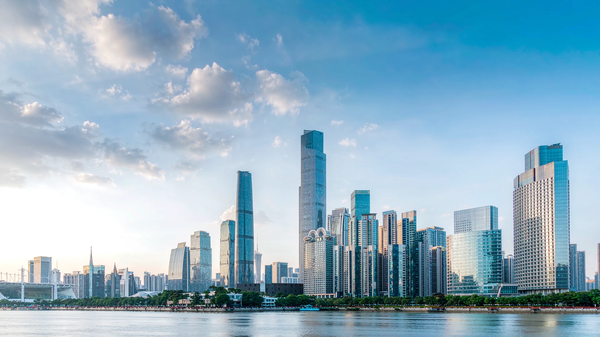
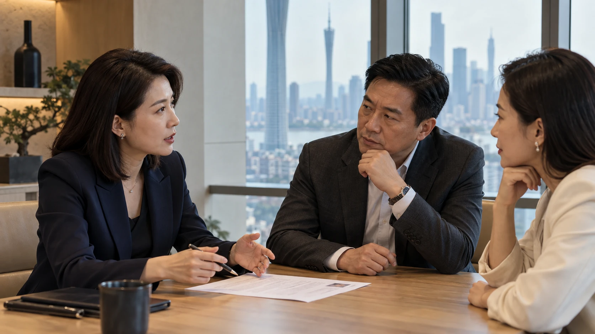
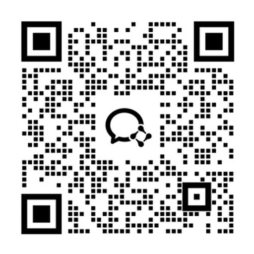

高素质的顾问团队
顾问均来自生命大健康行业甲方 / 乙方背景，具备优秀的业务理解力和交付力，多名顾问从业经历超过十年。

广州汇睿管理咨询有限公司是一家专注于生命大健康领域人才供应链服务的新兴企业。公司坐落在广州市黄埔区知识城腾飞园，紧贴政府生物医药及高端医疗器械的战略发展规划，致力于为广大企业提供中高端人才寻访服务及组织与人才发展服务。
公司目前拥有一支行业资深的专业顾问团队，依托人才管理系统和完善的招聘流程，在高端岗位猎聘服务中保持快、精、准的优势。
同时公司拥有一支资深的组织和人才发展团队，提供定制化工作坊、中高端人才培训和教练等服务，助力企业实现核心人才从搜寻到发展的人才供应链闭环。
EXECUTIVE SEARCH
高端招聘 / 招聘解决方案 / 招聘定制方案

聚焦上述六大行业方向，提供高端招聘、招聘解决方案及招聘定制方案。
针对企业目前需求，分析核心需求，制定最适合客户的招聘方案。
根据已制定的方案，通过人才管理系统及外部渠道进行人选快速匹配，并进行严格甄选。
与人选进行沟通，确认人选情况、意愿及职业安排是否对双方有利。
对人选背景及职业历史进行调查，与客户沟通人选录用流程，跟进人选入职情况。
公司优势
顾问均来自生命大健康行业甲方 / 乙方背景，具备优秀的业务理解力和交付力，多名顾问从业经历超过十年。
依托人才管理系统，结合公司积累的高端人才简历资源，全流程跟进候选人推荐进程。
内部人才库、招聘平台、定向寻访、专业社交渠道、人才转介绍及行业交流等，多渠道协同，精准匹配企业用人需求。
所有推荐候选人均经过顾问面试评估，推荐前核实职业经历，入职前完成背景调查。
每次的岗位需求，由具备相关行业多年工作背景的顾问组成项目组开展寻访工作，真正理解客户招聘需求。
依托人才管理系统与高效寻访体系，3–5个工作日推荐首批候选人。
TALENT DEVELOPMENT
战略落地 / 领导力进化 / 组织激活
通过定制化工作坊、中高端人才培训和教练服务，围绕战略落地、领导力进化与组织激活，助力企业实现人才与组织发展。
探讨人才发展需求★ 为明星产品
Whole Brain Technology
大五人格、全脑优势
六色积木、卡牌类
全脑技术®（Whole Brain Technology）于1970年代由赫曼博士提出，后来发展为全脑模型（Whole Brain Model），通过四象限呈现人们在事实、结构、感知、战略方面的思维偏好。
HBDI全脑思维可以助力自我认知，了解个人思维优势与风险，结合情境需要调整适应，并应用于团队组建、问题解决、策略制定等情境，助力团队与组织效能提升。
CONTACT HUI RUI
联系我们，探讨您的人才与组织发展需求。

扫码添加微信
沟通合作需求